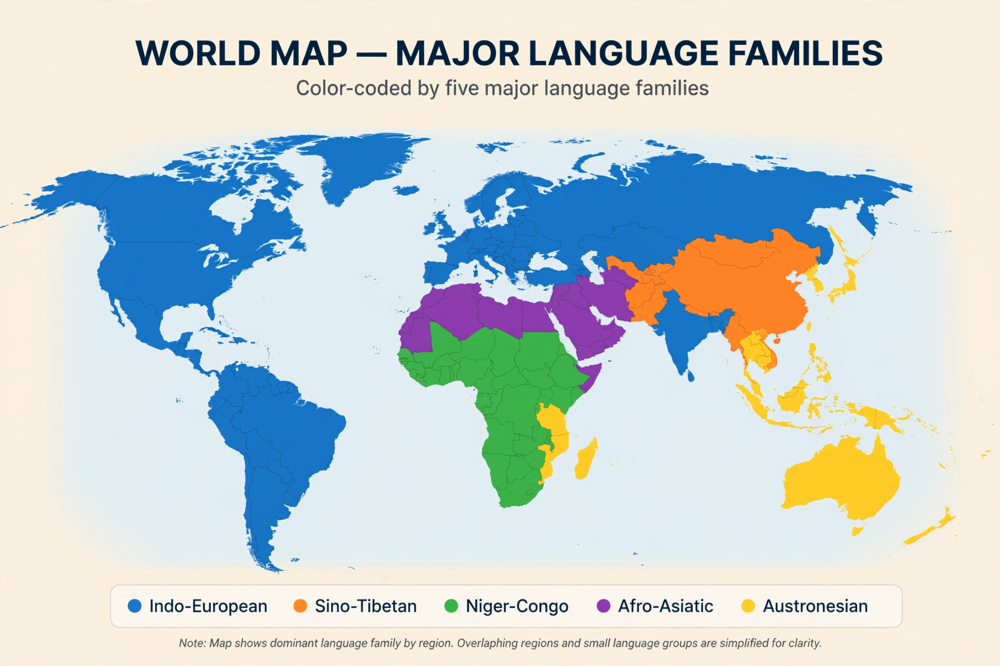

Language family

A language family is a group of languages related through descent from a common ancestral language, called a proto-language. Languages in a family share features of vocabulary, grammar and phonology that can be explained only by common inheritance, established by the comparative method of historical linguistics. The largest families by number of speakers are Indo-European, Sino-Tibetan, Niger-Congo, Afro-Asiatic, Austronesian and Trans–New Guinea; in total there are roughly 140 recognised families and some 7,000 living languages.
How families are established
Linguists establish relatedness by finding systematic sound correspondences between languages — for example, the regular matching of Germanic consonants to those of other Indo-European languages described by Grimm's law. Shared irregularities, such as similar suppletive verb paradigms, are especially strong evidence because they are unlikely to arise by chance or borrowing. From such correspondences scholars reconstruct features of the unattested proto-language, as with Proto-Indo-European.
Structure
Families branch into subfamilies: Indo-European contains Indo-Iranian, which contains Indo-Aryan, which contains languages such as Hindi and Sanskrit. Some languages are isolates with no proven relatives — Basque, Ainu, Burushaski and (outside its Japonic relatives) Korean are often discussed in this context. Proposed deep groupings such as Nostratic or Altaic remain controversial because the comparative method loses reliability beyond roughly 6,000–10,000 years of divergence.